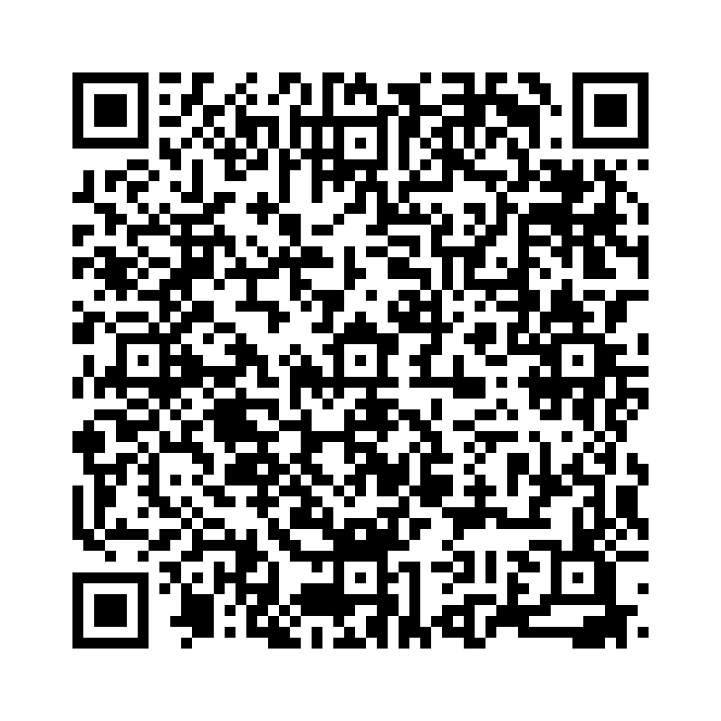

「keep」は「持ち続ける」「保つ」「守る」という意味があり、状態の維持や所有、約束の保持などさまざまな場面で使われます。
以下の単語を正しい語順に並べ替えて、正しい英文を作りましょう。

問題 1: (box / I / my / toys / in / a / keep) - 私はおもちゃを箱にしまっています。
解答: I keep my toys in a box.
解説: 「I keep my toys in a box.」は「私はおもちゃを箱にしまっています。」という意味です。
問題 2: ( the / door / keep / closed) - ドアを閉めたままにしておいてください。
解答: Keep the door closed.
解説: 「Keep the door closed.」は「ドアを閉めたままにしておいてください。」という意味です。
問題 3: (her / she / keeps / room / clean) - 彼女は部屋をきれいに保っています。
解答: She keeps her room clean.
解説: 「She keeps her room clean.」は「彼女は部屋をきれいに保っています。」という意味です。
問題 4: (you / for / me / keep / can / this / book / ?) - この本を預かってくれますか？
解答: Can you keep this book for me?
解説: 「Can you keep this book for me?」は「この本を預かってくれますか？」という意味です。
問題 5: (every / a / diary / he / keeps / day) - 彼は毎日日記をつけています。
解答: He keeps a diary every day.
解説: 「He keeps a diary every day.」は「彼は毎日日記をつけています。」という意味です。
問題 6: (keep / quiet / please / in / library / the) - 図書館では静かにしてください。
解答: Please keep quiet in the library.
解説: 「Please keep quiet in the library.」は「図書館では静かにしてください。」という意味です。
問題 7: (keep / their / they / promises) - 彼らは約束を守ります。
解答: They keep their promises.
解説: 「They keep their promises.」は「彼らは約束を守ります。」という意味です。
問題 8: (I / keep / this / want / to / photo) - 私はこの写真を持っておきたいです。
解答: I want to keep this photo.
解説: 「I want to keep this photo.」は「私はこの写真を持っておきたいです。」という意味です。
問題 9: (before / your / hands / keep / clean / eating) - 食べる前に手をきれいに保ちましょう。
解答: Keep your hands clean before eating.
解説: 「Keep your hands clean before eating.」は「食べる前に手をきれいに保ちましょう。」という意味です。
問題 10: (a / keeps / she / dog / in / her / house) - 彼女は家で犬を飼っています。
解答: She keeps a dog in her house.
解説: 「She keeps a dog in her house.」は「彼女は家で犬を飼っています。」という意味です。